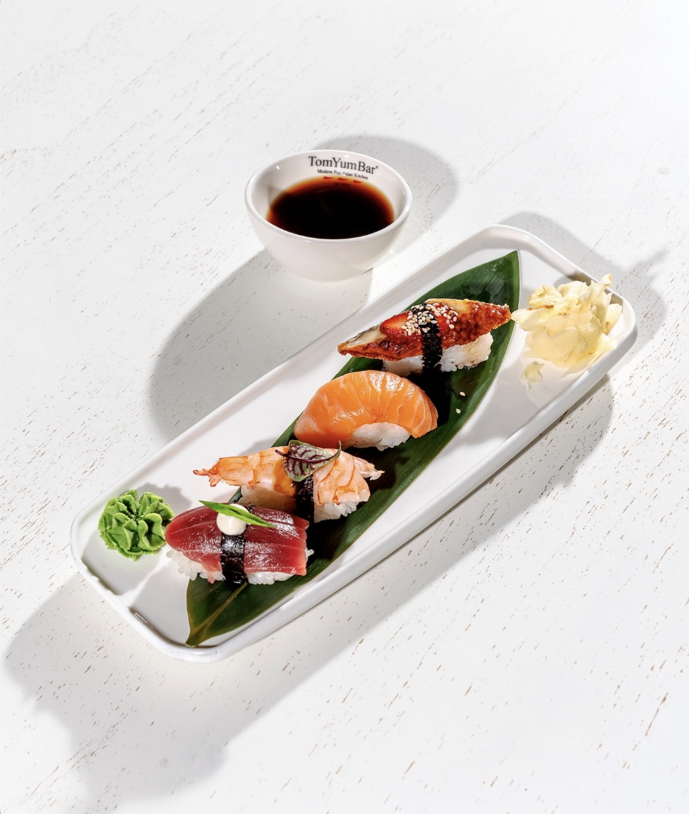
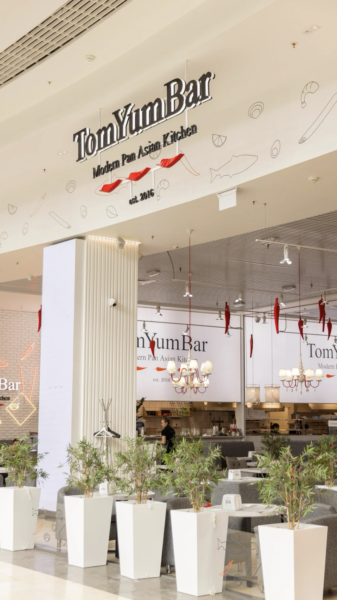
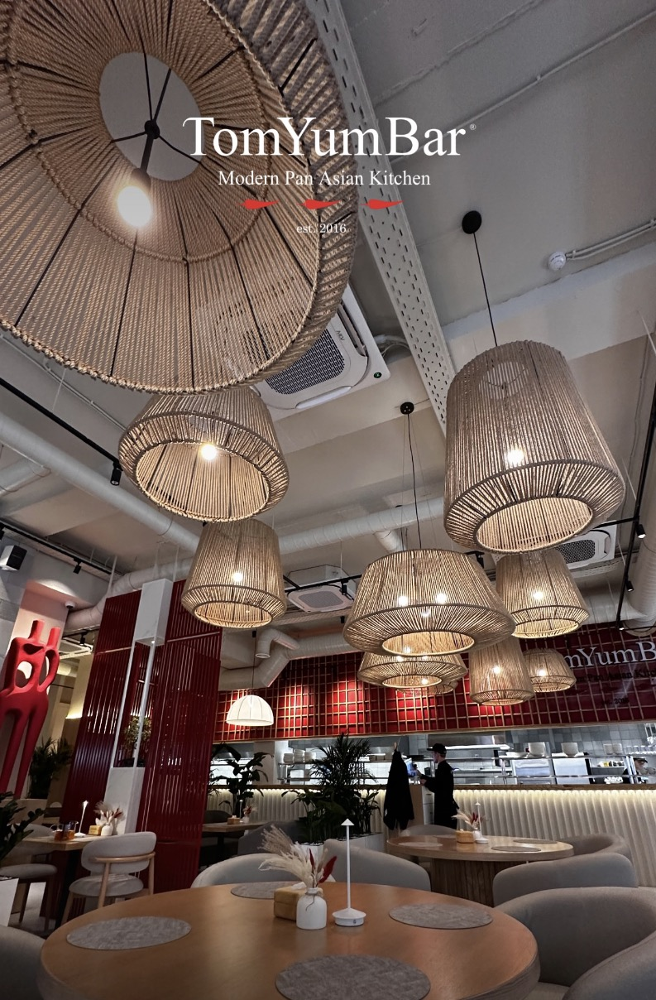
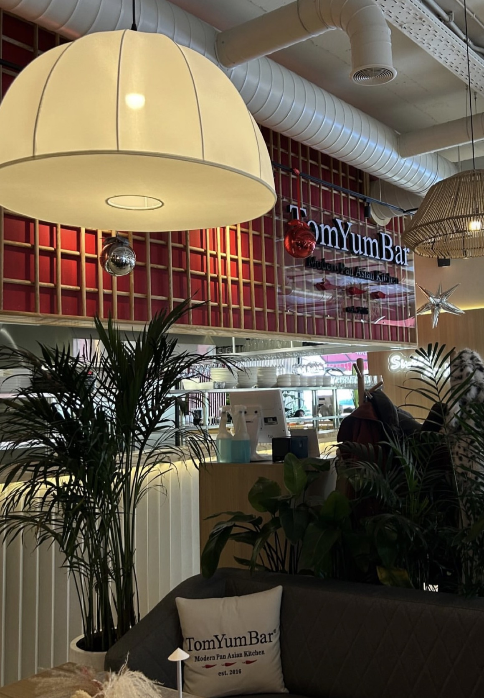

Nigiri Selection
Salmon, tuna, tiger prawn & seared eel — hand-pressed to order.
Tashkent · Est. 2016
Fire, smoke and citrus — the flavors of Asia,
plated for the modern table.

Our Story
Since 2016, TomYumBar has reimagined the flavors of Thailand, Japan, China and Vietnam through a single, modern lens — bold spice, precise technique, and a room built for long, unhurried tables.
Every dish moves between two worlds: the comfort of a night-market bowl and the composure of fine dining. Woven rattan, warm wood and deep lacquer red set the stage; the kitchen does the rest.
Step inside the space →Chef's Selection

Salmon, tuna, tiger prawn & seared eel — hand-pressed to order.
The house classic — river prawn, lemongrass, chili oil.
Wok-charred wagyu, scallion, roasted garlic.
The Room


Visit Us